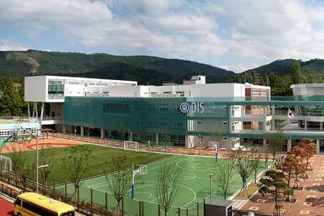
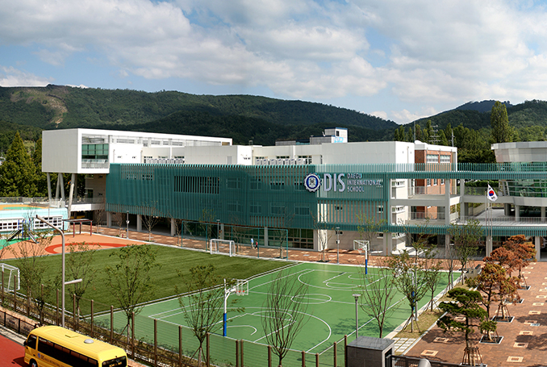

優れた外国人生活環境
- Home
- 投資メリット
- 投資メリット
- 優れた外国人生活環境
優れた外国人生活環境
韓国初の外国人向け教育機関である大邱国際学校の設立により、教育環境（幼稚園や小・中・高等学校）が改善
- 大邱国際学校（DIS）
 
- 位置 : 大邱広域市鳳舞洞八公路東方のヨンシン学校隣
- 規模 : 17,815平方メートル
- 開校 : 2010年8月
- 学生数 : 小・中・高校約580人(幼稚園の2つの組は別途)
- カリキュラム : 幼稚園、小・中・高の教育課程
- 運営者 : Lee Academy、USA
- 10つのスーパーデラックスホテルと豊富なショッピング施設
- 約3千箇所の医療施設
- 八公山、琵瑟山及び琴湖江に囲まれた豊かな自然環境
- 大邱の周囲には仏教文化と儒教文化を同時に体験できる文化財が散在しており、慶州、安東文化遺跡地にユネスコ指定の世界文化遺産及び観光資源が豊富
大邱市所在の外国人学校
| 学校名 | 位置 | カリキュラム | 学生数 |
|---|---|---|---|
| TAS(Taegu American School) | 大邱広域市南区大明洞 Camp George内 |
幼・小・中・高 | 800 |
| 華僑学校 | 大邱広域市中区華僑タウン内 | 幼・小・中・高 | 幼・小学校（200） 中・高等学校（70） |
医療機関
| 区分 | 総合病院 | 病·医院 | 韓方 病·医院 | 歯科 病·医院 | 助産院 | 附設医院 |
|---|---|---|---|---|---|---|
| 3,073ヶ所 | 11 | 1,605 | 732 | 718 | 1 | 6 |
ホテル
| 区分 | ホテル名 | 客室数 | ウェブサイト |
|---|---|---|---|
| スーパーデラックス | ホテルインターブルゴ | 342 | hotel.inter-burgo.com |
| ノボテル大邱 シティセンター |
204 | www.novotel.com | |
| グランドホテル | 150 | www.daegugrand.co.kr | |
| デラックス | ホテルインターブルゴエクスコ | 303 | jpn.ibexco.net/ |
| GSプラザホテル | 88 | www.gsplazahotel.com | |
| ホテルエアポート | 51 |
www.htlair.com www.hotelairport.co.kr |
|
| エルディス・リージェント ホテル | 52 | www.eldishotel.com | |
| プリンスホテル | 117 | www.princehotel.co.kr | |
| セイントウェスタン ホテル | 54 | www.saintwestern.co.kr |